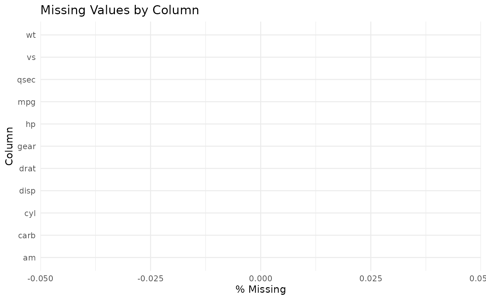

End-to-End Workflow
First, we can generate an EDA report and check for missing data:
# Using mtcars, converting 0/1 to words for classification
df <- mtcars
df$am <- factor(df$am, levels = c(0, 1), labels = c("Auto", "Manual"))
eda_report(df, target = "am")
#> Dataset dimensions: 32 rows x 11 columns
#>
#> Column types:
#> mpg cyl disp hp drat wt qsec vs
#> "numeric" "numeric" "numeric" "numeric" "numeric" "numeric" "numeric" "numeric"
#> am gear carb
#> "factor" "numeric" "numeric"
#>
#> Missing values (%):
#> named numeric(0)
#>
#> Target class balance (am):
#>
#> Auto Manual
#> 59.38 40.62
plot_missing(df)
Next, we handle any missing values using our automated imputer before training a baseline model and generating a submission file:
df <- quick_impute(df)
#> All missing values have been successfully imputed!
model <- quick_baseline(df, target = "am")
#> Loading required package: ggplot2
#> Loading required package: lattice
#> Warning: glm.fit: fitted probabilities numerically 0 or 1 occurred
#> Warning: glm.fit: fitted probabilities numerically 0 or 1 occurred
#> Warning: glm.fit: fitted probabilities numerically 0 or 1 occurred
#> Warning: glm.fit: fitted probabilities numerically 0 or 1 occurred
#> Warning: glm.fit: fitted probabilities numerically 0 or 1 occurred
#> Warning: glm.fit: algorithm did not converge
#> Warning: glm.fit: fitted probabilities numerically 0 or 1 occurred
#> Generalized Linear Model
#>
#> 32 samples
#> 10 predictors
#> 2 classes: 'Auto', 'Manual'
#>
#> No pre-processing
#> Resampling: Cross-Validated (5 fold)
#> Summary of sample sizes: 26, 25, 26, 25, 26
#> Resampling results:
#>
#> ROC Sens Spec
#> 0.95 0.9 1
make_submission(model, newdata = df, id_values = 1:nrow(df), file = tempfile())
#> Submission written to: /tmp/Rtmp2IMHkm/file1a4c4ebf323a